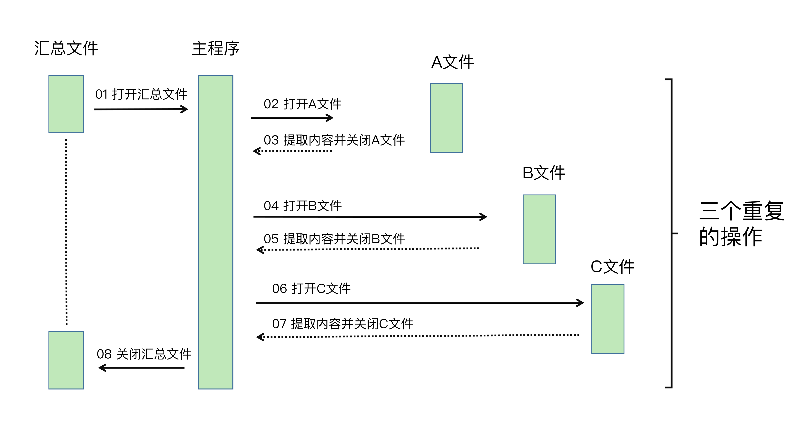
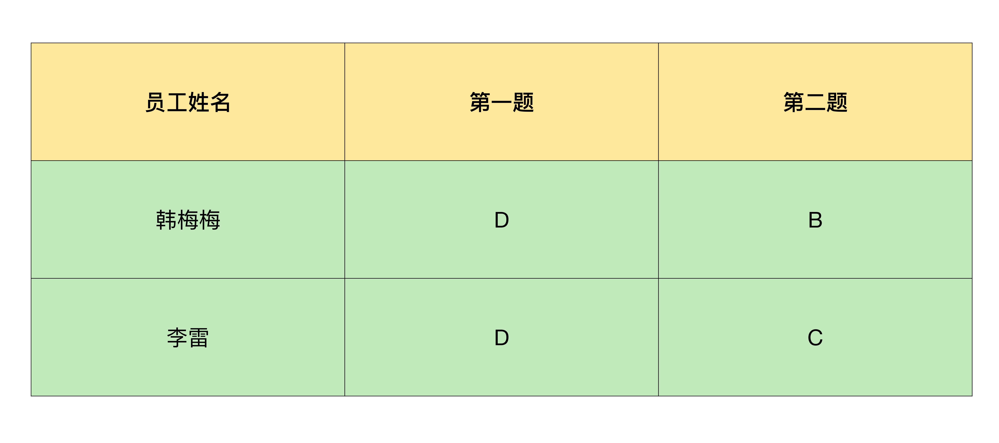
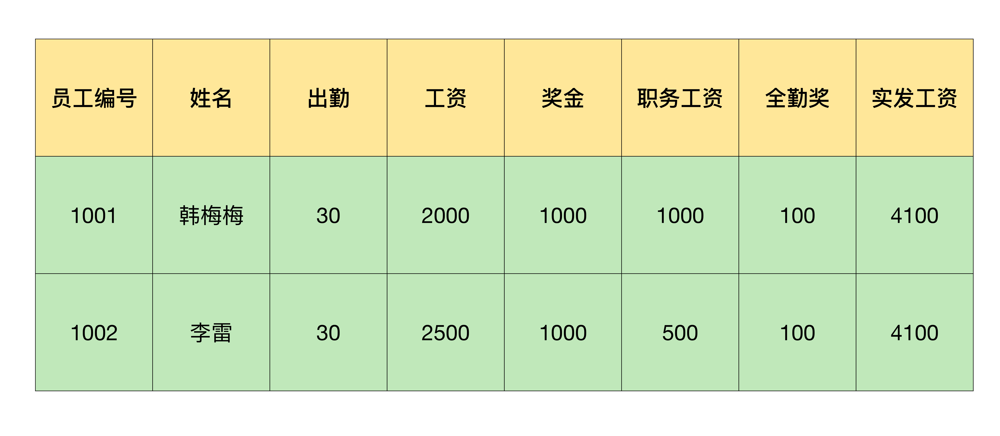

- 00 导读 入门Python的必备知识.md
- 00 开篇词 重复工作这么多，怎样才能提高工作效率？.md
- 01 拆分与合并：如何快速地批量处理内容相似的Excel？.md
- 02 善用Python扩展库：如何批量合并多个文档？.md
- 03 图片转文字：如何提高识别准确率？.md
- 04 函数与字典：如何实现多次替换.md
- 05 图像处理库：如何实现长图拼接？.md
- 06 jieba分词：如何基于感情色彩进行单词数量统计？.md
- 07 快速读写文件：如何实现跨文件的字数统计？.md
- 08 正则表达式：如何提高搜索内容的精确度？.md
- 09 扩展搜索：如何快速找到想要的文件？.md
- 10 按指定顺序给词语排序，提高查找效率.md
- 11 通过程序并行计算，避免CPU资源浪费.md
- 12 文本处理函数：三招解决数据对齐问题.md
- 13 Excel插件：如何扩展Excel的基本功能？.md
- 14 VBA脚本编程：如何扩展Excel，实现文件的批量打印？.md
- 15 PowerShell脚本：如何实现文件批量处理的自动化？.md
- 16 循环与文件目录管理：如何实现文件的批量重命名？.md
- 17 不同操作系统下，如何通过网络同步文件？.md
- 18 http库：如何批量下载在线内容，解放鼠标（上）？.md
- 19 http库：如何批量下载在线内容，解放鼠标（下）？.md
- 20 不同文件混在一起，怎么快速分类？.md
- 21 SQLite文本数据库：如何进行数据管理（上）？.md
- 22 SQLite文本数据库：如何进行数据管理（下）？.md
- 23 怎么用数据透视表更直观地展示汇报成果？.md
- 24 条形、饼状、柱状图最适合用在什么场景下？.md
- 25 图表库：想要生成动态图表，用Echarts就够了.md
- 26 快速提取图片中的色块，模仿一张大师的照片.md
- 27 zipfile压缩库：如何给数据压缩&加密备份？.md
- 28 Celery库：让计算机定时执行任务，解放人力.md
- 29 网络和邮件库：定时收发邮件，减少手动操作.md
- 30 怎么快速把任意文件格式转成PDF，并批量加水印？.md
- 春节特别放送1 实体水果店转线上销售的数据统计问题.md
- 春节特别放送2 用自顶至底的思路解决数据统计问题.md
- 春节特别放送3 揭晓项目作业的答案.md
- 结束语 和我一起成为10X效率职场人.md
01 拆分与合并：如何快速地批量处理内容相似的Excel？
你好，我是尹会生。今天是咱们的第一节课，我先带你学习下，如何用Python操作Excel。
Excel是我们在工作中用到的最频繁的软件之一，它有着强大的计算能力和便捷的图表功能。如果我们要在同一个Excel文件中进行操作，手工进行也很方便，但问题是，如果我们需要同时操作多个Excel文件，就是一件非常耗时的事情了。
在工作场景中，需要同时操作多个Excel的情况主要有2种：批量合并和批量拆分。我来带你看2个场景。
- 批量合并。假设你需要对某些工作内容进行问卷调查，这时你用Excel做了调查问卷模版。我想你会这样做：先把Excel通过工作群分发给所有员工，再把群里收集到的反馈附件汇总成一个文件。
- 批量拆分。假设你是公司的财务人员，你需要使用Excel对员工工资进行核算，之后再打印出来。但是公司要求员工薪水保密，所以每个员工的工资需要拆分成一个独立的文件，最后还需要打印出来。
无论是合并，还是拆分，我们都面临着一个困境：没有现成的软件可以实现多个Excel文件的合并和拆分操作，所以你只好对每一个Excel文件都进行“打开-复制粘贴-保存”的工作。
很多人在面对这样的工作需求时，都忍不住立马去做，却很少停下来分析问题。其实，这三步是很简单的工作，不过也是无意义的重复工作，既浪费了时间，又没有真正产生价值。
幸运的是，这些工作都可以通过Python来解决。今天，我就给你介绍一下用Python实现重复工作自动化，快速实现Excel的合并和拆分的方法。
如何用Python手工操作一个Excel文件？
刚刚我们说到批量处理，其实也就是逐一处理多个文件。如果我们想要提升这类工作的效率，就可以先借助Python把每一次处理都自动化。所以，在讲具体的合并和拆分方法前，我们要解决的第一个问题，就是用Python代替你的双手来操作一个Excel文件。
如果要用Python操作Excel文件，首先就要支持读写Excel的功能。在Python中，要想实现对某一个功能的支持，就需要安装扩展库。
支持Excel读取的扩展库叫做xlrd库，支持Excel写入的扩展库叫做xlwt库。我们可以使用下面的命令行进行安装：
pip3 install xlrd
pip3 install xlwt
那么，如何使用Python读取Excel文件的内容呢？你可以使用这样的代码实现：
import xlrd
file = '/Users/user1/Desktop/a.xls'
data = xlrd.open_workbook(file)
table = data.sheets()[0]
value = table.cell_value(rowx=4, colx=4)
虽然代码很简单，但是它对自动化操作Excel的意义非常大。
试想一下，如果能够使用Python替代全部的手工操作，大批量的文件就可以使用Python的循环功能自动化完成对每一个文件的自动处理工作了。
对于编程语言来说，文件合并的步骤可以分解为读取第一个文件，读取第二个文件，将第一个文件的内容追加到第二个文件下方。
所以在我们学会使用Python读取Excel文件之后，我们还需要掌握如何将读取的内容写入到Excel文件。写入文件的代码如下：
import xlwt
dst_file = '/Users/edz/Desktop/文章1/result/结果.xlsx'
workbook = xlwt.Workbook(encoding='utf-8')
xlsheet = workbook.add_sheet("统计结果")
# 写入内容,假设取出的内容是value
xlsheet.write(0, 0, value)
# 保存文件
workbook.save(dst_file)
可以看到，写入文件的时候，我们使用了一个叫做write的函数。它的前两个参数代表的写入位置，分别是指定写入的行和列坐标。无需多言，这个写入位置非常重要。如果按照上面的代码方式写入，也就是前两个参数均指定为0，就会覆盖这个Excel文件中的现有内容了。
所以，你如果想完成合并操作的话，就要实现对现有Excel内容进行追加写入。通常我们会先获取现有的内容一共有多少行、多少列，然后向后移动一个位置，再进行写入。
这种追加写入的方式，在我们的工作场景中非常常见。接下来，我们就看看怎么用追加写入的方式，实现多个Excel文件的合并吧。
怎样实现Excel的合并？
我们还是用前面提到的做调查问卷模板的场景，来具体讲一讲怎么实现Excel的合并。这里，我们就要用到一个重要功能了：循环功能。
循环功能的核心代码是：
from pathlib import Path, PurePath
# 指定要合并excel的路径
src_path = '/Users/edz/Desktop/文章1/调查问卷'
# 取得该目录下所有的xlsx格式文件
p = Path(src_path)
files = [x for x in p.iterdir() if PurePath(x).match('*.xlsx')]
在这段代码中，我使用了for语句，实现了Python的循环功能。通过这样的功能，我可以依次获取src_path变量指向的路径下所有的文件。同时，为了避免这个目录里的文件类型过多，我使用一个if语句用于条件判断，只提取.xlsx结尾的文件。
现在，用Excel实现调查问卷自动化的主要功能已经都实现了。接下来，我们看看怎样实现整个工作过程。我把它们的工作流程定义为三个步骤：
- 找到整个工作过程当中重复操作的部分；
- 将重复操作的部分需要哪些手工操作找出来，使用Python编写程序代替手工操作的部分；
- 对重复的部分，使用循环语句进行批量处理。
如果你对把手工操作改成Python程序，还没有任何经验的话，我还可以为你提供更直观的办法，叫做画时序图。
我先带你看看时序图是什么呢？如下图表:

简单来讲，时序图就是以时间顺序来排列程序中的事件的图表。通过上图，你应该很容易看出重复操作的这四个事件：
- 打开文件；
- 提取用户填写内容；
- 粘贴到汇总文件；
- 关闭文件。
下面，我们就用Python来替代这四个事件。由于它们是重复的，所以我会使用for循环对它们依次进行处理。
回到我们的Excel做调查问卷的场景。当我们回收了调查问卷之后，每份问卷的格式是完全相同的，刚好可以利用上面提到的循环功能处理每份问卷。而问卷的选项则是我们需要提取出来用于汇总的，所以我们要使用Python实现读取Excel调查问卷的功能，最后再写入到一个新的Excel中。
好了，我们来看下这一功能的Python代码是如何编写的：
import xlrd
import xlwt
from pathlib import Path, PurePath
# 导入excel和文件操作库
# 指定要合并excel的路径
src_path = '/Users/edz/Desktop/文章1/调查问卷'
# 指定合并完成的路径
dst_file = '/Users/edz/Desktop/文章1/result/结果.xls'
# 取得该目录下所有的xlsx格式文件
p = Path(src_path)
files = [x for x in p.iterdir() if PurePath(x).match('*.xls')]
# 准备一个列表存放读取结果
content = []
# 对每一个文件进行重复处理
for file in files:
# 用文件名作为每个用户的标识
username = file.stem
data = xlrd.open_workbook(file)
table = data.sheets()[0]
# 取得每一项的结果
answer1 = table.cell_value(rowx=4, colx=4)
answer2 = table.cell_value(rowx=10, colx=4)
temp = f'{username},{answer1},{answer2}'
# 合并为一行先存储起来
content.append(temp.split(','))
print(temp)
# 输出
# 韩梅梅,D,B
# 李雷,D,C
# 准备写入文件的表头
table_header = ['员工姓名', '第一题', '第二题']
workbook = xlwt.Workbook(encoding='utf-8')
xlsheet = workbook.add_sheet("统计结果")
# 写入表头
row = 0
col = 0
for cell_header in table_header:
xlsheet.write(row, col, cell_header)
col += 1
# 向下移动一行
row += 1
# 取出每一行内容
for line in content:
col = 0
# 取出每个单元格内容
for cell in line:
# 写入内容
xlsheet.write(row, col, cell)
# 向右移动一个单元格
col += 1
# 向下移动一行
row += 1
# 保存最终结果
workbook.save(dst_file)
在这段代码中，Excel的读取和写入操作、for循环操作都派上了用场，它的整个工作过程就像我画的时序图一样：先打开用来汇总的Excel文件，依次对多个调查问卷进行读取，最后逐行写入到新建立的汇总文件中。
合并后的效果如下图：

有一点需要你注意的是，为了让你更好地理解Python循环的工作过程，我没有严格遵守编码规范，而是尽可能地让程序按照从上到下的顺序执行。如果你已经不是第一次使用Python，可以根据你的使用习惯，将程序进一步封装成Python里的函数，更加优雅地去实现它。
总的来说，在使用Python对Excel的合并操作时，需要你掌握的最核心的操作就是读写文件和行列坐标控制。熟练掌握这两个功能，你才能一次得到想要合并成的样子，不用再对Excel进行二次的手工操作。
怎样实现Excel的拆分？
对于批量操作Excel，还有一种情况是批量拆分。比如很多公司会用Excel记录和统计员工的薪水、记录货物信息、记录客户情况等数据。这些数据越来越多之后，文件会越来越大，打开文件和查找速度就会变得很慢，最后只好按照某些列进行Excel的拆分。
接下来，我就为你讲解一下如何进行Excel的批量拆分。让我们来看一个工资条的案例。
例如我在一个Excel中存放了工资信息，需要把第一行的表头和员工工资拆分成一个以员工名字命名的Excel文件。我来带你看下具体该怎么操作：

如果把拆分工作也画成时序图，就会发现，逐行读取可以使用循环功能批量操作，对每一行的内容处理，如果能使用Python进行自动化的话，一个Excel拆分的工作就全部能使用Python自动化实现了。所以，我打算设计一个for循环语句用于遍历所有的行，在for循环语句当中实现对每一行具体内容的处理。
我把文件拆分的关键代码写了出来，你可以参考一下：
for line in range(1,employee_number):
content = table.row_values(rowx=line, start_colx=0, end_colx=None)
# 将表头和员工数量重新组成一个新的文件
new_content = []
# 增加表头到要写入的内容中
new_content.append(salary_header)
# 增加员工工资到要写入的内容中
new_content.append(content)
# 调用自定义函数write_to_file()写入新的文件
write_to_file(filename = content[1], cnt = new_content)
在这段代码的第一行，我使用了一个range函数，它会生成从1到员工总数的数字范围。你可能会问，为什么没有直接写出Excel中总员工的数量，而是使用employee_number这样一个变量呢？
这是因为，如果直接写出员工数量，一旦遇到员工入职或员工离职等情况，你就需要根据Excel中的行数重新编写Python代码，而我现在使用的方式是每次打开Excel文件，会自动统计员工的数量（即行数），这种编写代码的方式能够让你的程序有更好的扩展性，一般这种方式用于处理文件内容经常变动的情况。
文件的批量拆分也是通过循环来实现逐行处理的功能的，但是你需要注意拆分以后的要保存的文件名称不要重复，不然很容易导致Excel中只有最后一次循环写入的内容。
小结
今天，我为你讲解了如何使用Python代替手工进行Excel的批量合并和拆分操作。一般来说，批量合并和拆分主要有几个步骤：
- 手动或借助时序图找到需要重复操作的部分。
- 将重复的部分用Python实现自动化操作。
- 对Python实现自动化的脚本，再用循环功能实现批量操作。
Python有着丰富的扩展库，当你掌握了熟练操作Excel的方法之后，对于WPS等其他办公软件，也可以通过相应的API进行类似的合并和拆分操作。
除了基本操作呢，我还给你介绍了分析问题的方法——时序图。通过时序图，你可以找到那些运行逻辑中重复的部分，利用循环完成自动化操作。
不管是利用Python代替手工操作节约时间，还是使用循环代替手工多次执行减少工作难度，这些都是提升工作效率的有效办法。希望你能在处理日常工作时多思考，有意识地把你的日常办公工作自动化。
思考题
欢迎你在课程后留言，告诉我使用Python解决了你工作中的哪些重复性问题。
如果你觉得这节课有用，能解决你的办公效率问题，欢迎你点击“请朋友读”，分享给你的朋友或同事。
编辑小提示：专栏的完整代码位置是https://github.com/wilsonyin123/python_productivity，可点击链接下载查看。或者通过网盘链接提取后下载，链接是: https://pan.baidu.com/s/1UvEKDCGnU6yb0a7gHLSE4Q?pwd=5wf1，提取码: 5wf1。
© 2019 - 2023 Liangliang Lee. Powered by gin and hexo-theme-book.